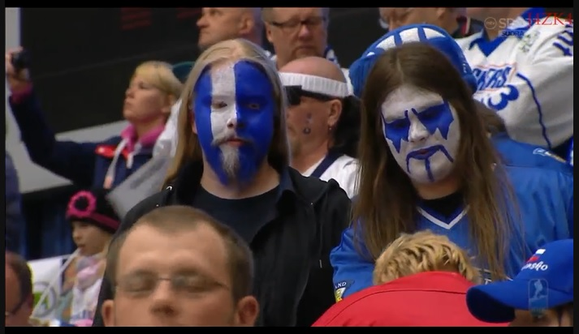

1. Muokkaa edelliseen harjoituksessa 3. tekemiäsi .html- ja .css-tiedostoja ja lisää CSS:n bordereita käyttäen
seuraava "painike". Nimeä palautettavat tiedostot css-kehykset.html ja css-kehykset.css
2. Toteuta haluamallesi kuvalle seuraavanlainen kehys, lisää palautuksen myös mukaan kuva (voit tehdä
lähetyksestä myös
.zip-paketin). Nimeä palautettavat tiedostot: css-kehykset-kuvassa.html ja css-kehykset-kuvassa.css

3. Luo haluamallesi kuvalle alla näkyvän tyylinen CSS:n border-ominaisuus, lisää myös palautuksen mukaan kuva
(voit
tehdä lähetyksestä myös -zip-paketin). Nimeä tiedostot: css-kehykset-kuvassa-katkoviiva.html ja
css-kehykset-kuvassa-katkoviiva.css